MAP-020 · CH1-1 · 8뷰 시각 인수 준비 (Contact Sheet)
Mac MAP · 세션 d447a49d · 2026-10-02 · 기존 원화/캡처 재사용(신규 생성 0) · root 재현용
CAMERA QA 8뷰 — 2/8 HAVE · 6/8 UNKNOWN
01 START UNKNOWN 6시 (4000,7600) · t100,190 정확 6시 캡처 없음 — root 재현 필요
기대 외곽 화면 끝까지 연속 · 시작 안전구역 가독 · 하단 START mass 연결
금지 블록 배치감 · 빈 외곽 hole · 동일 asset 즉시 반복
결함 D2 뿌리 띠 반복(남측)
02 SOUTH MASS HAVE (2420,6600) · t60.5,165
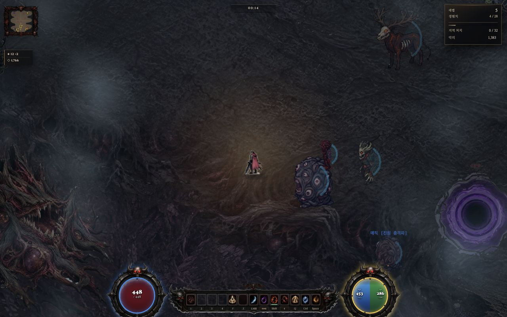
z1 · 0 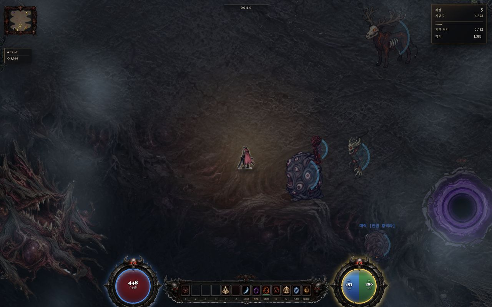
z1 · A 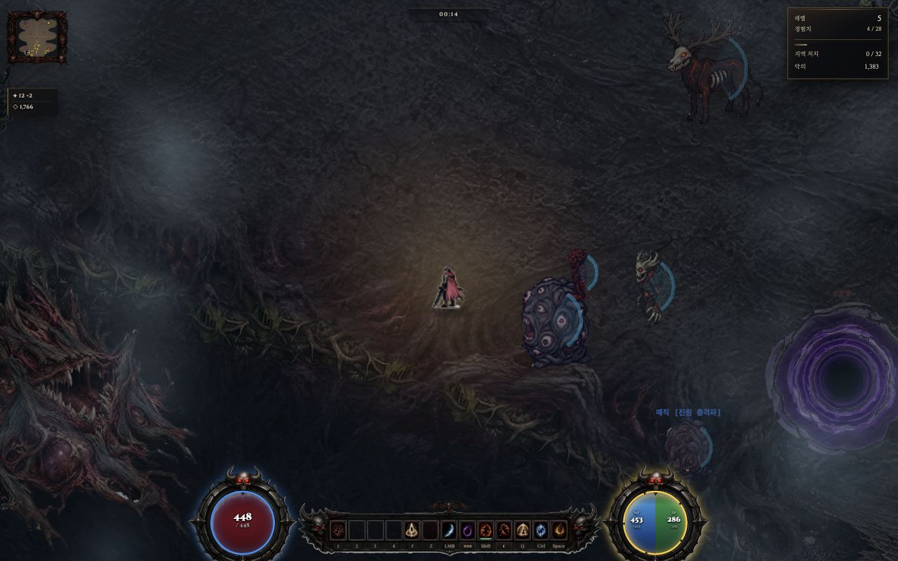
z1 · B 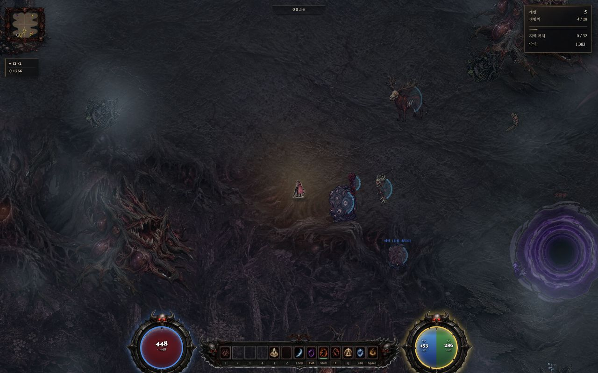
.62 · 0 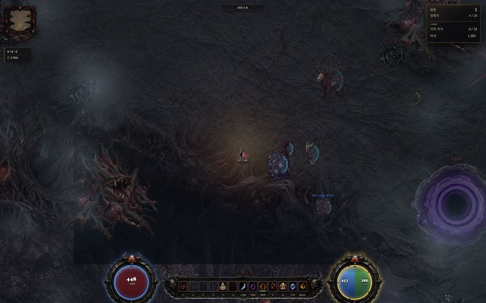
.62 · A 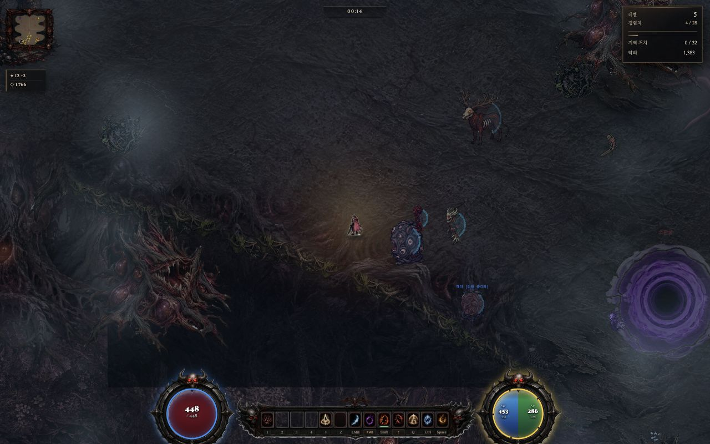
.62 · B
기대 정상 줌1 경계 뿌리 윤곽 읽힘 · 바닥–숲 경계 연속
금지 좌측 갈고리 뿌리 마디 반복(D2) · 원거리 사각 그림자 절단(D1)
관찰 .62 B 하부에 사각 톤블록(D1, 수정 전 캡처). 0 비교엔 없음. 좌측 뿌리 윤곽 반복감.
03 EARLY UNKNOWN (5620,6520) · 제안 증거 없음 — root 재현 필요
기대 START와 다른 composition(3초 규칙) · 전투 공간 확보
금지 START와 동일 구도 · 동일 통로 폭 반복
04 MAIN ARENA UNKNOWN 중앙 (4020,4450) 증거 없음 — root 재현 필요
기대 중앙 전투공간 충분 · landmark 위계 읽힘
금지 동일 크기 arena 반복 · 빈 중앙
05 SIDE LEFT UNKNOWN 서 (1640,5620) Mac 실화면 0 (PC 서측 보드 관찰 이력만)
기대 좌 side mass 충분 · 외곽 연속
금지 빈 side · 뿌리 반복 띠(D2)
결함 D2 뿌리 반복(서측 보드)
06 SIDE RIGHT · M5 주머니 HAVE(부분) approach (6660,6140)
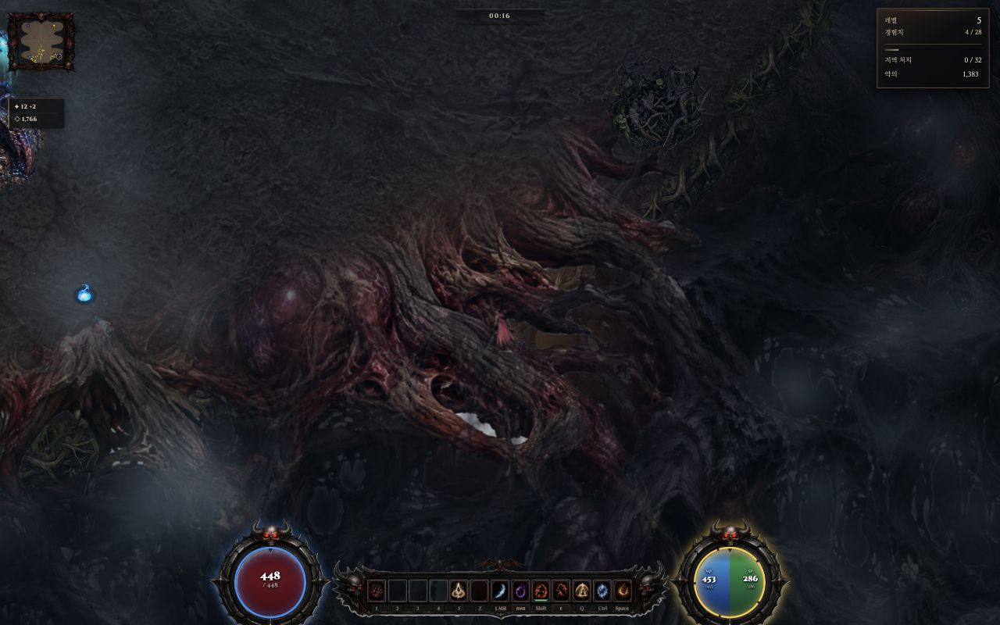
approach S 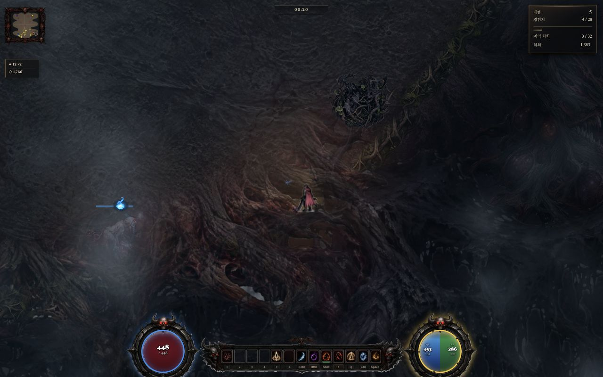
S 차단 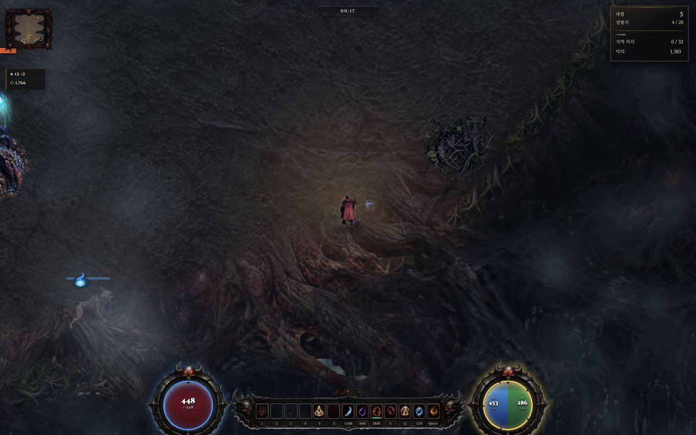
N 복귀 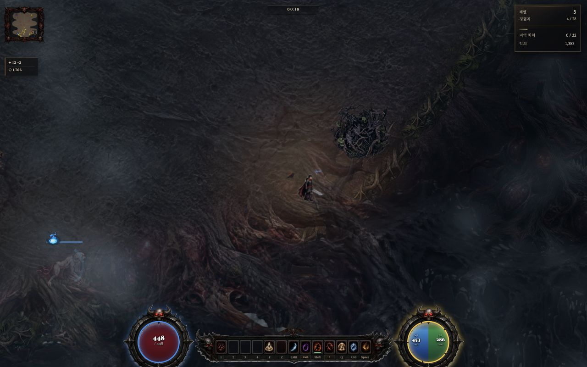
E 개구 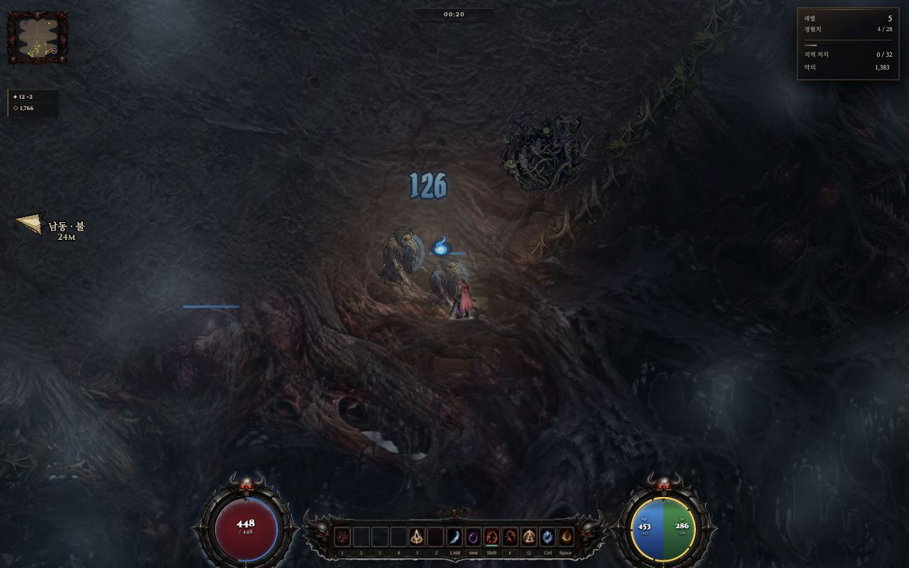
적 가독
보행 경계 S→y6304.369 차단 · N→y6137.214 · E→x6746.363 · S2→y6223.577 차단
기대 접근 경계 이동/복귀/차단 가독 · 오버행 아래 플레이어 가독
금지 문서 7000,6900을 진입점으로 사용(벽/오기) · 오버행이 플레이어·적 가림
결함 D3 주머니 안→입구 전체경로 미성립(보류)
07 PRIMARY LANDMARK UNKNOWN 후보 (1766,6620) 좌표 미확정 — root 확인 필요
기대 primary landmark 위계 읽힘 · 주변과 대비
금지 landmark 미식별 · 배경에 묻힘
08 LATE → EXIT / BOSS GATE UNKNOWN 12시 (4000,720) 증거 없음 — root 재현 필요 (LATE 상단중앙 ~4000,2400 경유)
기대 게이트/상승 통로 읽힘 · 좁은 연결로 시각화
금지 출구 불명확 · 빈 상단 외곽
기존 결함 위치 (Defect Catalog)
ID 결함 상태 위치 / 상세 재검 기준
D1 원거리 shade 사각 절단 FIXED 줌 .62 A/B, 화면 약 x194~1086 / y102~698 사각 AO 톤블록(0엔 없음). 원인: Ch1BoundaryEdge.draw hw=VW*.5+80/hh=VH*.5+80 줌 미반영
현행 소스(범위 VW*.5/z+80)에서 .62 A/B 재촬영 시 사각형 재발 없음
D2 뿌리 띠 반복(유사 모티브) RETOUCH 남·서 바닥–숲 경계, 좌측 갈고리 뿌리 마디 동일 형태. prop_pool.png crop(200,530,440×120)+내부목질 2종, 305앵커 92px 격자
같은 asset 즉시 반복 안 보여야 함(CAMERA QA Q4)
D3 M5 주머니 전체 경로 보류 M5 남동 보행 주머니. 문서 7000,6900=벽(오기), approach 6660,6140 비벽. 접근 경계만 확인
주머니 안→입구 전체경로 + 오버행 아래 플레이어/적 가독 통과
root 재현 시작 경로
START 6시 (4000,7600)
→ SOUTH MASS (2420,6600) [기존 캡처 지점]
→ EARLY (5620,6520)
→ SIDE RIGHT / M5 approach (6660,6140) → 주머니 S·W·D·S 보행
→ MAIN ARENA (4020,4450)
→ SIDE LEFT (1640,5620)
→ PRIMARY LANDMARK (후보 1766,6620 — 확정 필요)
→ LATE (상단중앙 ~4000,2400 — 확정 필요)
→ EXIT / BOSS GATE 12시 (4000,720)
좌표 이름(master/world) 혼재 → 실제 G.cam·플레이어 월드좌표를 읽고 맞출 것. 기본 B·어둠 .38 유지. 설정값이 아닌 실제 적용 줌(런타임 _tzoom)과 화면 범위를 확인.
VISUAL VERDICT 근거 (MAP PRODUCTION REPORT와 분리)
RETOUCH
PASS 근거 : D1 줌 사각절단 수정(§7, 재검수 별도).
RETOUCH 근거 : D2 뿌리 반복 잔존 · 8뷰 중 6뷰 미방문(UNKNOWN) · D3 M5 전체경로 보류.
FAIL 근거 : 없음.
CAMERA QA 8뷰 전부 실증거 없으면 PASS 금지(evidence-gate 일관). 현재 2/8 HAVE → PASS 불가. 실화면 8뷰 재현은 root 단독 후속.